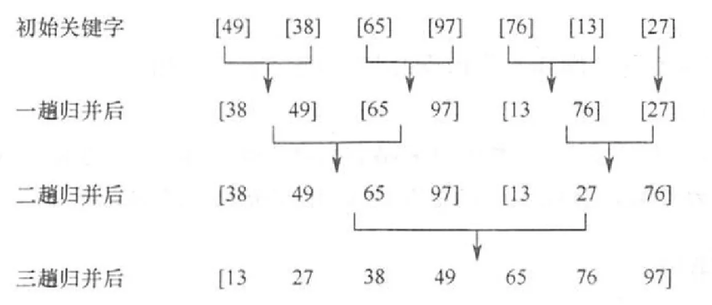
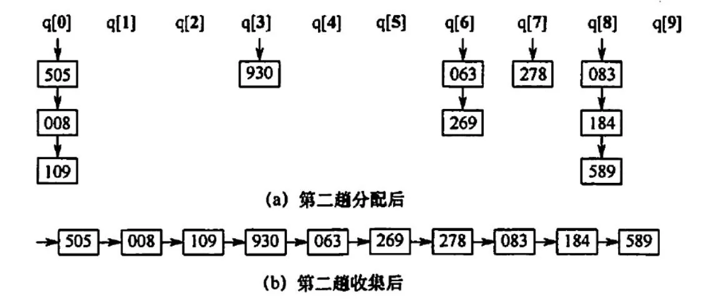
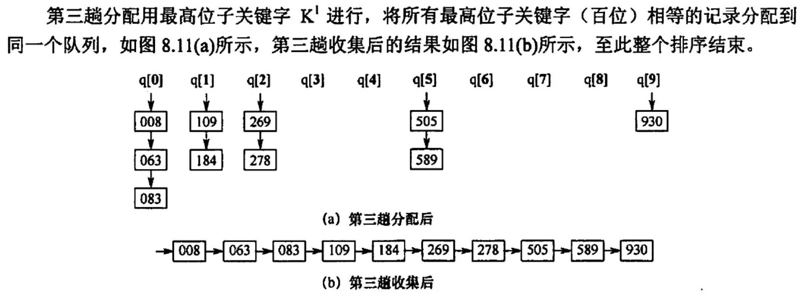

2022.10.22
二路归并排序示例：



时间效率：一趟分配O(n),一趟收集O(r),d趟综合O(d(n+r))；n是元素个数，r是某指标的种类，d是指标个数
稳定性：稳定
【答案】：C
【答案】：C
【答案】：D,C
【答案】：A
【答案】：B
【答案】：B
【答案】：AB
【答案】：B
【答案】：D
对{05,45,13, 55,94,17,42}进行基数排序，一趟排序的结果是（）.
A. 05,46, 13,55,94, 17,42
B. 05, 13, 17, 42, 46, 55, 94
C. 42,13,94,05,55,46, 17
D. 05, 13, 46, 55, 17, 42, 94
【答案】：C
【2013 统考真题】对给定的关键字序列 110,119，007,911,114， 120， 122 进行基数排序，第2趟分配收集后得到的关键宇序列是（）。
A. 007,110,119,114,911, 120, 122
B. 007, 110, 119, 114, 911, 122, 120
C. 007,110,911,114,119,120, 122
D. 110, 120, 911, 122, 114, 007, 119
【答案】：C
007
110，911，114，119
120，122
【2016 统考真题】对 10TB 的数据文件进行排序，应使用的方法是(）。
A. 希尔排序
B.堆排序
C.快速排序
D.归并排序
【答案】：D
【2017 统考真题】在内部排序时，若选择了归并排序而未选择插入排序，则可能的理由是（ ）.
I．归并排序的程序代码更短
II．归并排序的占用空问更少
III. 归并排序的运行效率更高
A. 仅I
B. 仅III
C. 仅I、II
D. 仅I、III
【答案】：B
【2021 统考真题】设数组 S[] = {93,945,372,9,146,151,301,485,236,327,43,892}，来用最低位优先（LSD）基数排序将 S 排列成升序序列。第一趟分配、收集后，元素 372之前、之后紧邻的元素分别是（ ）。
A. 43, 892
B. 236, 301
C. 301, 892
D. 485, 301
【答案】：C